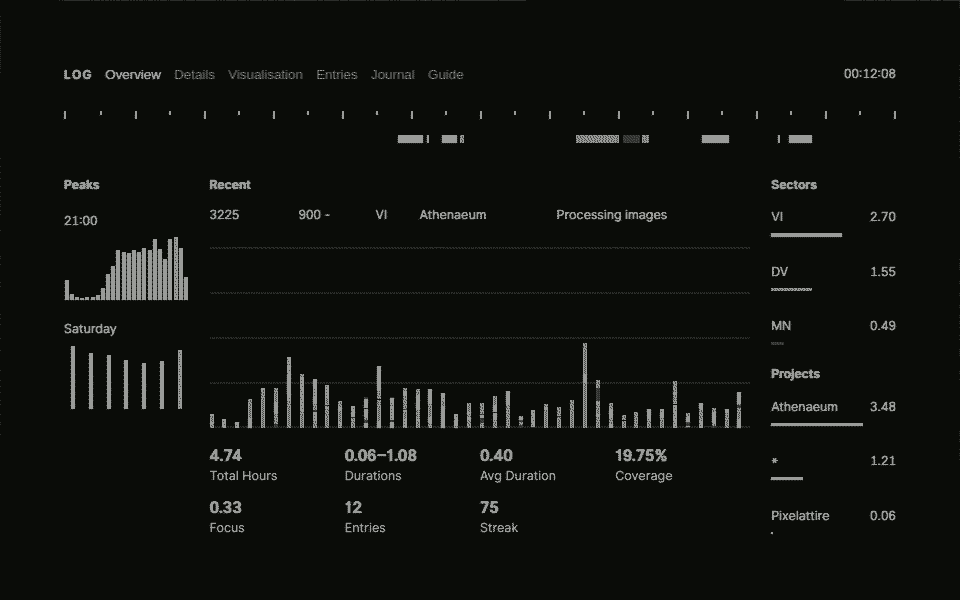

L0617–Z0718 · 465.38 h · 390.54 DV · 65.75 VI · 9.09 RE
Log is a time-tracker, inspired by similar systems, designed for single-tasking: start a log, focus on your task, and then end it when you're done. It's available as an Electron app for Linux and macOS. Download it here.
Commands are entered via a console. The app has a built-in Guide that contains a list of commands and their usage.
“When performance is measured, performance improves. When performance is measured and reported, the rate of improvement accelerates.”
— Thomas Monson